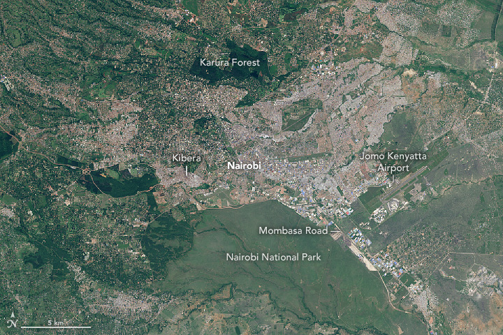
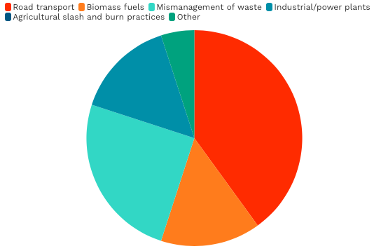
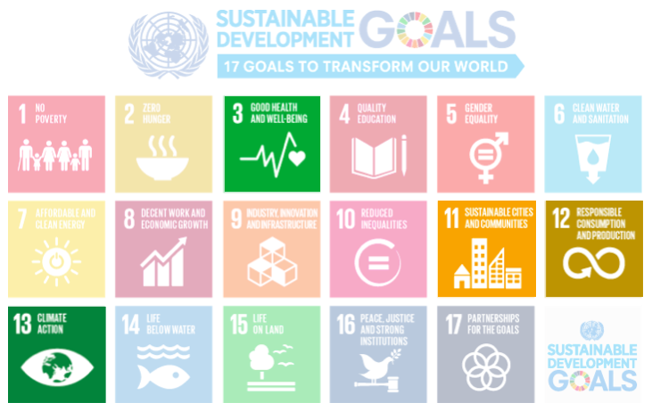
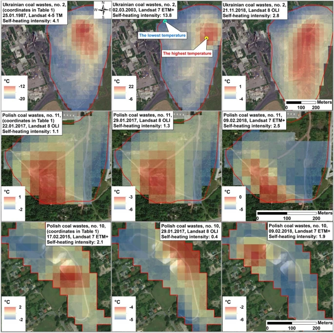
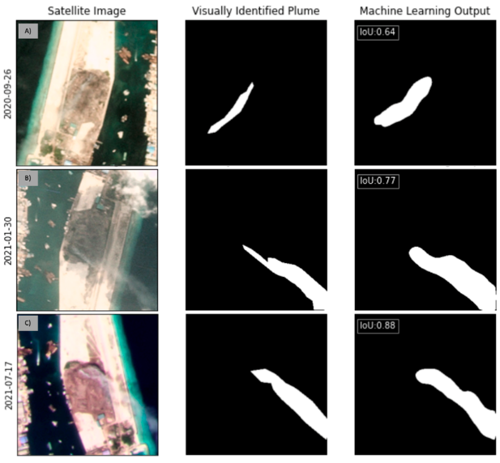

4 Policy
This week we were encouraged to consider how remotely sensed data could be incorporated into metropolitan policies and urban development frameworks. During my research I came across Nairobi’s Air Quality Action Plan (2019-2023) and the controversy surrounding its broadly failed implementation. In several of the plan’s listed objectives I noticed viable and cost-effective opportunities to utilise EO data which have currently gone amiss. Thus, in this diary entry I shall outline an action plan that both describes the current issues at hand and offers a remote sensing data-driven solution to challenges faced by the national government.
4.1 Summary
4.1.1 Nairobi, Kenya; the rapidly urbanising ‘Silicon-Savannah’
Nairobi is the capital and largest city in Kenya, containing a current population of nearly 4.5 million (Hey, 2023).

Like many cities in Africa, Nairobi has experienced unprecedented urbanisation in the 21st century which has triggered many positive consequences including a rapidly expanding economy (particularly driven by an explosion in the city’s tech industry earning Nairobi the nickname ‘Silicon-Savannah’), economic advancement and growing global influence (UN Habitat, 2006, Switzerland Global Enterprise, 2021). Simultaneously however, uncontrolled urbanisation has also triggered a host of new socio-economic and environmental challenges that have posed (among many things) a serious strain on existing infrastructure, a reduction in environmental quality and record-high unemployment (Nato et al., 2023).
Of the negative consequences brought about by urbanisation, air quality in Nairobi has experienced perhaps the greatest hit, representing a serious environmental challenge that is only set to worsen with forecasted population growth.
4.1.2 Air quality degradation: causes, consequences and challenges
In 2019, air pollution in Nairobi was 4.2 times higher than WHO recommended average annual concentration levels; an achievement which has been consistently reported since 2001 (Clean Air Fund, 2023, ASAP Report, 2019). This is result of both formal and informal activities, with the three largest sectoral contributors being road transport, solid waste mismanagement and biomass fuels (see pie chart below for full breakdown).

Currently, the city only has one active air pollution monitoring site (located near Jomo Kenyatta airport) which limits opportunities to conduct spatio-temporal analyses of air pollution and instead forces a dependence on short term, ad hoc monitoring studies (Kinney et al.,2012, Nairobi City Council, 2018). Despite a lack of records however, the effects of pollution have not gone unnoticed. Both short and long term respiratory illnesses including pneumonia and lung cancer represent significant public health problems, with three in every ten hospital visits in the capital being attributed to respiratory infections linked to air pollution (Briton, 2023).
The Kenyan national government sought to respond to this by developing strict Air Quality Regulations for the country in 2014. However, high levels of governmental corruption and financial mismanagement saw little implementation of these regulations and instead the document became used for referencing purposes (ASAP Report, 2019). It was evident that city councilors alone would struggle to implement action, and that international cooperation was necessary for instigating change. It was in this landscape that the 2019 Air Quality Action Plan was announced; an ambitious collaboration between the Kenyan national government, the UN Environment Agency and the Environmental Compliance Institute.
4.1.3 The Air Quality Action Plan (2019-2023)
This plan seeks to support Nairobi City County to develop better air quality management strategies, with the overall objective of building improved capacity to develop, implement and enforce policy and regulatory frameworks for air quality management across the capital (Nairobi City Council, 2018). The fixed time period for this plan is 2019-2023, however it was hoped that following the official action ‘end date’ that objectives would remain a top governmental priority. The plan has four main objectives, detailed in the table below.
| Objective | Strategy |
|---|---|
|
Undertake an inventory of the air pollutants and emission sources that most contribute to poor air quality in Nairobi City |
|
Deploy effective communication on the health and environmental impacts of air pollution, mitigation options and benefits |
|
Adopt policy, legislative and regulatory options for air management that incorporate mandatory requirements, voluntary and market based approaches |
|
Enhance the capacity of NCCG for implementation and enforcement programme for Nairobi City’s air quality legislation |
Improving current monitoring capacity
Education
Implementation/enforcement
These objectives are closely linked to several of the UN Sustainable Development Goals, the most relevant of which are presented in the figure below. Specifically, Nairobi’s Action Plan mirrors the aim outlined in Target 3.9 under Goal 3 which focuses on reducing the number of deaths and illnesses from hazardous chemicals and air, water, and soil pollution and contamination.

Whilst the action plan demonstrated a growing concern towards air quality and an escalated government focus on pollution, the objectives have not been addressed with equal success. The ASAP briefing (led by the UK Government) found approaches to traffic management and reducing emissions by cars to be effective and multifaceted, with implementation plans scheduled for the present decade (ASAP Report, 2019). Similarly, outreach and education programs appear to have had a degree of success as indicated in studies such as that by Kamau, 2016. By contrast however, less attention was given to reducing pollution caused by poor waste management and the burning of waste (both in residential areas and in the city’s main rubbish dump, Dandora Landfill) remains a pressing problem.
That the action plan has thus far failed to address this problem of waste management, despite it being a major source of pollutants demonstrates the necessity for new suggested approaches to tackle the problem. Currently, there is no information online about how the city seeks to tackle this problem beyond issuing penalties to those caught in the act of burning, which in itself is a rarely utilised approach (Kamau, 2016). In the following section I shall outline a method which relies on freely available EO data to address this; a method which I believe, if implemented, could offer an effective and low-cost solution to the current problem reported across Nairobi.
4.2 Applications
4.2.1 Waste management and illegal burning: the problem
A serious problem in Nairobi is the illegal dumping and burning of waste. Every day, the city generates 3000 tonnes of solid municipal waste, of which 62% is illegally disposed of (dumped on the side of the road + burnt). This generates an estimated 25% of Nairobi’s PM2.5 concentrations and thus represents a key source of air pollutants. Further information on this problem can be found here: City residents’ lives at risk over open burning of waste
Currently, local authorities are charged with the responsibility of collecting and disposing of solid municipal waste within their area of jurisdiction, and are granted powers to issue minimum fines of KSH 500,000 ($3,500) or imprison offenders by up to 6 months. Presently however, rubbish collection is extremely poor, with many areas never being served or only once in several months (Muniafu & Otiato, 2010). This is attributed to failings by government authorities above local councilors to monitor and enforce waste management responsibilities; a case which is worsened by severe financial mismanagement (Henry et al., 2006). To take matters into their own hands, many individuals in residential areas move waste to the roadside and burn it, producing clouds of toxic noxious fumes (Muniafu & Otiato, 2010).
4.2.2 Waste management and illegal burning: the proposed solution
Given the evident legal loopholes and broken accountability system for waste in the city, I suggest that the problem could be best addressed through the creation of an impartial watchdog body who monitor the location of burnt waste through satellite imagery. Instead of penalising individuals who resort to burning waste as a last-ditch scenario when local authorities fail to do their job, this watchdog could report its findings to the national government and identify which local authorities have the worst performance in regards to waste removal.
The idea for this came from my knowledge of past studies that utilise a Normalised Burn Ratio Index to monitor the severity of (typically) forest fires (EG. Lu et al.,2015 Giddey et al., 2022, Alcaras et al., 2022). These papers used freely available satellite imagery (EG. Sentinel-2) to derive an index for fire severity that allows the location and intensity of fires to be mapped. This served as inspiration for me as it demonstrated the potential for methodologies to monitor fire using remote sensing to be employed even where budgets for accessing expensive high spectral/spatial/temporal imagery do not exist. From this starting point, I began to investigate whether similar methods had been employed in the detection of illegal fires/burning.
I found Nádudvari et al.’s 2021 paper to be valuable in considering viable methodologies. They were able to identify the location of self-heating coal waste (a precursor to coal dump fires) in Polish and Ukranian mining regions by creating a self heating intensity index that used band math on selected cloud-free Landsat images. The full details of their methodology are outlined in section 3.1 of the paper: Classification of fires in coal waste dumps based on Landsat, Aster thermal bands and thermal camera in Polish and Ukrainian mining regions but broadly, the study depended on the thermal infrared sensors of satellite images taken by Landsat and applied ASTER, ‘the cost-effective and time-saving technique for monitoring coal waste fires and detecting their thermal anomalies’.

Although the limitations of their method are described in the paper (namely, they tried to use a combination of images obtained by different Landsat satellites which led to issues when comparing images against one another), they found Landsat 7 ETM+ to be the most effective sensor for their purposes. This is valuable insight in regards to opportunities for remote sensing in Nairobi as attempts to monitor fires could start by applying a similar methodology on imagery obtained by just this sensor. However, most waste burning occurs at night time in Nairobi to avoid detection (Clean Air Fund, 2023), and given that night-time Landsat images are rare (Nádudvari et al., 2021), this method may require supplementation by images that are obtained at night - in their case, they did this by using capturing images using a drone at night.
A more sophisticated methodology for detecting waste burning (as well as illegal dumping more generally) was outlined in a proof-of-concept article by The California Integrated Waste Management Board (CIWMB, 2005). They were able to identify the location of illegal waste tire piles by using high spatial resolution satellite imagery (Multispectral Ikonos) across 4 small areas with a combined area of >50km2 in California. Their method involved the use of visual analysis and an automated Tire Identification from Reflectance (TIRe) model to find possible waste tire piles - the model was a univariate decision tree which used the spectral characteristics of tires to segment possible tire features from the remaining image. The model was successful, proving capable of identifying 15 tire piles (2 of which were previously unknown to the CIWMB) and returning only one false positive. Unlike the research by Nádudvari, the CIWMB paper demonstrated the opportunity to identify much smaller objects from satellite data. However, whilst Landsat data is freely available, Ikonos sits behind a pay wall, which may affect the feasibility of its use in the case of Nairobi where government budgets are stretched and misused. Nonetheless, CIWMD’s findings demonstrate a proven, alternative approach to identifying waste + burning using remote sensing data which could be adapted for use by the Nairobi government.
A final approach which has been outlined in past literature was developed by Scott et al.,2023, who identified instances of illegal waste burning in the Maldieves through the development of a machine learning approach. Specifically, they used an ‘image classification and semantic segmentation model based on a pretrained convolutional neural network to identify and locate plumes within images’. They fed three-band (RGB), 3m/pixel images from Planet satellites into their model and found their classification model to achieve a training accuracy of 96% and a validation accuracy of 83%. Scott’s research indicates ever-expanding opportunities to utilise new technologies to detect fires more accurately than ever before.

Of the three methods outlined in this section, Scott et al.,’s 2023 represents the most complex. Unlike Nádudvari et al.’s 2021 paper, opportunities to reproduce Scott et al.,’s work is potentially more limited as it would require a greater technological capacity and people knowledgeable in the use of machine learning - several parts of the methodology went over my head! That isn’t to say it cannot be used - if funding was available and specialists were employed, this method would be an incredibly valuable way of monitoring burnt waste across Nairobi. However, as mentioned previously, it is unclear as to whether this is feasible given financial constraints. Therefore, in an ideal world it would be great to see a methodology like that used by Scott et al., 2023 to identifying poor waste management in local authorities across Nairobi, but it may be that an approach like that used by Nádudvari et al., 2021 or CIWMB, 2005 is more suitable.
It is important to note that these papers represent just three ways of identifying waste mismanagement contributing to air pollution from satellite imagery - other methodologies are outlined elsewhere! Instead of outlining a singular method, I hope this section has effectively communicated the fact that there is a wide range of ways of monitoring this pollution-contributor; each with a range of pros and cons.
4.3 Reflection
Before settling on Nairobi’s Air Quality Action Plan I did quite a lot of preliminary research into different metropolitan development plans and had no idea quite how many there were. Coming from a strictly quantitative physical geography background I had never really researched urban development before and found it particularly surprising to see how many frameworks overlapped with one another on spatial and temporal scales. If I’m being honest, this made me feel quite disillusioned with the idea that many of them are actually effective; I’m sure this is quite a generic realisation, but one which took me this long to come to. Another thing that I noticed was how wildly varied the quality of plans could be - comparing Nairobi’s lackluster Air Quality plan to something detailed and solution-focused like the Ahmedabad Heat-Health Action Plan (Knowlton et al.,2014) was valuable in demonstrating what makes a framework useful in practice rather than just serving as a reference document. It was probably from this realisation that I became so invested in the week’s task; I really enjoyed the creativity that had to go into imagining usable and actionable solutions to recognised problems. It was particularly satisfying to come up with ideas that involved the use of EO data, only to find that similar research had been conducted elsewhere that found the methods to be viable and effective. I really experienced this when I came across Scott et al.,’s 2023 paper in the Maldives as this was the idea I had been skirting around when reading other papers.
Beyond my personal reflections, I also want to add some reflections on the case of Nairobi itself. Although I do think that my proposed solutions could be theoretically used to accomplish some of the objectives outlined the city’s Action Plan, I’m also conscious of the fact that they’re incredibly ambitious and probably unrealistic. This is not due to limitiations in methodologies or data availability; rather, in virtually all of the literature I read I was constantly reminded of the corruption and financial mismanagement that plagues not only Nairobi but all levels of Kenya’s systems of governance. Therefore whilst it is totally feasible that a watchdog is set up and EO data is used for monitoring, I’m not sure that the resulting findings would do much to crack down on those responsible for air pollution. Instead, I fear that it would serve as another financial drain. Hopefully this is just my pessimism talking, as I would love to see novel uses of EO data outlined in scientific papers be used in practice to enact change.
4.4 References
- Alcaras, E., Costantino, D., Guastaferro, F., Parente, C., Pepe, M. (2022) ‘Normalised burn ratio plus (NBR+): A new index for Sentinel-2 imagery’. Remote Sensing, vol. 14, is. 7.
- ASAP Report (2019) ‘Air quality briefing note: Nairobi (Kenya)’. Available at: https://assets.publishing.service.gov.uk/media/5eb16f4b86650c4353446282/ASAP_-_East_Africa_-_Air_Quality_Briefing_Note_-_Nairobi.pdf
- Briton, G. (2023) ‘Kenya: Air pollution-related diseases burdening healthcare in Nairobi’. Web article, available at: https://news.scienceafrica.co.ke/kenya-air-pollution-related-diseases-burdening-healthcare-in-nairobi/
- California Integrated Waste Management Board (CIWMB) (2005) ‘Waste Tire Hauling and Disposal’. Available at:http://www.calrecycle.ca.gov/ Tires/Fires/
- Clean Air Fund (2023) ‘Nairobi and air pollution’. Web article, available at: https://www.cleanairfund.org/clean-air-africas-cities/nairobi-and-air-pollution/
- Giddey, B.J., Baard, J.A., Kraaij, T. (2022) ‘Verification of the differened Normalised Burn Ratio (dNBR) as an index of fire severity in Afrotemperate Forest’. South African Journal of Botany, vol. 146, pp. 348-353.
- Henry, R.K., Yongsheng, Z., Jun, D. (2006) ‘Municipal solid waste management challenges in developing countries - Kenyan case study’. Waste Management, vol. 26, is. 1, pp. 92-100.
- Hey, J.V. (2023) ‘Improving air quality in Nairobi’. Web article, available at: https://le.ac.uk/research/stories/sustaining-world/air-quality-nairobi
- Kamau, I.S. (2016) ‘Actors in environmental crime in city slums of Kenya; the case of illegal dumping in Mathare slum of Nairobi’. University of Nairobi Press.
- Kinney, P.L., Gichuru, M.G., Volavka-Close, N., Ngo, N., Ndiba, P.K., Law, A., Gachanja, A., Gaita, S.M., Chillrud, S.N., Sclar, E. (2012) ‘Traffic impacts on PM2.5 air quality in Nairobi, Kenya’. Environment, Science, Policy, vol. 14, is. 4, pp. 369-378.
- Knowlton, K., Kulkarni, S.P., Azhar, G.S., Mavalankar, D., Jaiswal, A., Connolly, M., Nori-Sarma, A., Rajiva, A., Dutta, P., Deol, B., Sanchez, L., Khosla, R., Webster, P.J., Toma, V.E., Sheffield, P., Hess, J.J. (2014) ‘Development and implementation of South Asia’s first heat-health action plan in Ahmedabad (Gujarat, India)’. International Journal of Environmental Research and Public Health, vol. 11, is. 4, pp. 3473-3492.
- Lu, B., He, Y., Tong, A. (2015) ‘Evaluation of spectral indices for estimating burn severity in semiarid grasslands’. International Journal of Wildland Fire, vol. 25, is. 2, pp. 147-157
- Muniafu, M., Otiato, E. (2010) ‘Solid waste management in Nairobi, Kenya. A case for emerging economies’. The Journal of Language, Technology & Entrepreneurship in Africa, vol. 2, no. 1, pp. 342-350
- Nádudvari, Á, Abramowicz, A., Fabiańska, M., Misz-Kennan, M., Ciesielczuk, J. (2021) ‘Classification of fires in coal waste dumps based on Landsat, ASTER thermal bands and thermal cameras in Polish and Ukranian mining regions’. International Journal of Coal Science and Technology, vol. 8, pp. 441-456.
- Nairobi City Council (2018) ‘Air quality action plan’. Available at: https://www.eci-africa.org/wp-content/uploads/2019/05/Nairobi-Air-Quality-Action-Plan_Final_ECI_31.12.2018.pdf
- NASA (2016) ‘Nairobi swells with urban growth’. Web article, available at: https://earthobservatory.nasa.gov/images/88822/nairobi-swells-with-urban-growth
- Nato, J., Njogu, H., Ngugi, R., Ordu, A.U., Ijjasz-Vasquez, E. (2023) ‘Urban economic development in Africa: A case study of Nairobi city’. Web article, available at: https://www.brookings.edu/articles/urban-economic-development-in-africa-a-case-study-of-nairobi-city/
- Scott, S.R., Hailemariam, P.E., Bhave, P.V., Bergin, M.H., Carlson, D.E. (2023) ‘Identifying waste burning plumes using high-resolution satellite imagery and machine learning: a case study in the Maldieves’. Environment, Science and Technology Letters, vol. 10, is. 8, pp. 642-648.
- Switzerland Global Enterprise (2021) ‘Global opportunities: Silicon Savannah - Tapping into the potential of Africa’s tech hub’. Web article, available at: https://www.s-ge.com/en/article/global-opportunities/20213-c6-kenya-tech-hub-fint1?ct
- The Guardian (2023) ‘The waste pickers of Nairobi’s Dandora dump site - in pictures’. Web article, available at: https://www.theguardian.com/environment/gallery/2023/nov/17/waste-pickers-nairobi-dandora-dump-site-in-pictures
- UN Habitat (2006) ‘Nairobi Urban Sector Profile’. Available at: https://unhabitat.org/sites/default/files/download-manager-files/Kenya%20Nairobi%20Urban%20Profile.pdf